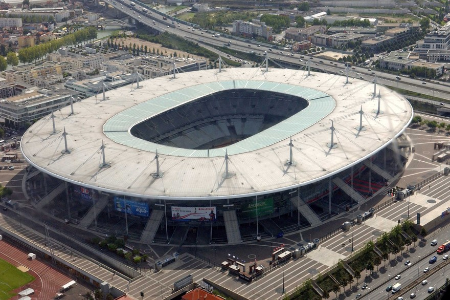

|
|
As Olimpíadas de Paris 2024 serão realizadas na França, de 26 de julho a 11 de agosto. É a terceira
vez
que Paris sediará os Jogos Olímpicos, após as edições de 1900 e 1924.
Haverá 32 esportes, 48 modalidades e 329 competições. Alguns dos esportes incluídos são ginástica artística, tiro com arco, nado artístico, atletismo, badminton, basquete 3x3, boxe, canoagem, ciclismo, esgrima, futebol, handebol, judô, natação, skate, surfe, taekwondo, tênis, vôlei e muito mais
|

|
Paris 2024 utilizará existente infraestrutura esportiva, como o Stade de France para a cerimônia de abertura e encerramento, além de outros locais como o Paris Expo Porte de Versailles para esportes como taekwondo e esgrima.
|